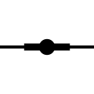
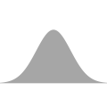
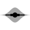
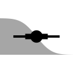
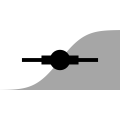
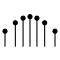
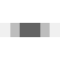
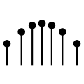

Package index
-
ggdist-packageggdist - Visualizations of Distributions and Uncertainty
Stats and Geoms for visualizing distributions with ggplot2
These ggplot2 layers are split into two categories: stats for visualizing sample data and distribution vectors, and the underlying geoms for visualizing already-summarized data (e.g., intervals or density values).
Stats for visualizing sample data and distribution vectors
stats for visualizing tidy data frames of draws (e.g. sample data, draws from a bootstrap distributation, draws from a Bayesian posterior) and distribution vectors (such as distributional objects and posterior::rvar()s).
-

stat_slabinterval() - Slab + interval plots for sample data and analytical distributions (ggplot stat)
-

stat_pointinterval() - Point + multiple-interval plot (shortcut stat)
-

stat_interval() - Multiple-interval plot (shortcut stat)
-

stat_slab() - Slab (ridge) plot (shortcut stat)
-

stat_halfeye() - Half-eye (density + interval) plot (shortcut stat)
-

stat_eye() - Eye (violin + interval) plot (shortcut stat)
-

stat_ccdfinterval() - CCDF bar plot (shortcut stat)
-

stat_cdfinterval() - CDF bar plot (shortcut stat)
-
stat_gradientinterval() - Gradient + interval plot (shortcut stat)
-
stat_histinterval() - Histogram + interval plot (shortcut stat)
-

stat_spike() - Spike plot (ggplot2 stat)
-
stat_dotsinterval() - Dots + point + interval plot (shortcut stat)
-
stat_dots() - Dot plot (shortcut stat)
-

stat_mcse_dots() - Blurry MCSE dot plot (stat)
-

stat_lineribbon() - Line + multiple-ribbon plot (shortcut stat)
-
stat_ribbon() - Multiple-ribbon plot (shortcut stat)
Geoms for visualizing already-summarized data
geoms for visualizing data that has already been summarized (e.g. into density function values, points, intervals, etc).
-

geom_slabinterval() - Slab + point + interval meta-geom
-

geom_pointinterval() - Point + multiple-interval plot (shortcut geom)
-

geom_interval() - Multiple-interval plot (shortcut geom)
-

geom_slab() - Slab (ridge) plot (shortcut geom)
-

geom_spike() - Spike plot (ggplot2 geom)
-

geom_dotsinterval() - Automatic dotplot + point + interval meta-geom
-

geom_dots() - Dot plot (shortcut geom)
-
geom_blur_dots() - Blurry dot plot (geom)
-
geom_weave() - Dot-weave plot (shortcut geom)
-

geom_swarm() - Beeswarm plot (shortcut geom)
-

geom_lineribbon() - Line + multiple-ribbon plots (ggplot geom)
Point summaries and intervals
Functions to calculate point summaries and intervals on tidy data. These functions can be used directly on vectors, on data frames of draws, on distribution vectors (such as distributional objects and posterior::rvar()s), and in ggdist stats and geoms to determine what point summaries and intervals are drawn.
-
point_interval()qi()ll()ul()hdi()Mode()hdci()mean_qi()median_qi()mode_qi()mean_ll()median_ll()mode_ll()mean_ul()median_ul()mode_ul()mean_hdi()median_hdi()mode_hdi()mean_hdci()median_hdci()mode_hdci() - Point and interval summaries for tidy data frames of draws from distributions
-
curve_interval() - Curvewise point and interval summaries for tidy data frames of draws from distributions
-
interval_widths()pretty_widths() - Nicely-spaced sets of interval widths
-
cut_cdf_qi() - Categorize values from a CDF into quantile intervals
-
parse_dist()r_dist_name() - Parse distribution specifications into columns of a data frame
-
dstudent_t()pstudent_t()qstudent_t()rstudent_t() - Scaled and shifted Student's t distribution
-
dlkjcorr_marginal()plkjcorr_marginal()qlkjcorr_marginal()rlkjcorr_marginal() - Marginal distribution of a single correlation from an LKJ distribution
-
marginalize_lkjcorr() - Turn spec for LKJ distribution into spec for marginal LKJ distribution
Scales and sub-scales
Scales for custom aesthetics used by ggdist geoms and stats, such as thickness, colour_ramp, and side, as well as sub-geometry-specific aesthetics, such as slab_colour, point_size, etc.
-
scale_thickness_shared()scale_thickness_identity() - Slab thickness scale (ggplot2 scale)
-
thickness() - Thickness (datatype)
-
subscale_thickness() - Sub-scale for thickness aesthetic
-
subscale_identity() - Identity sub-scale for thickness aesthetic
-
scale_colour_ramp_continuous()scale_color_ramp_continuous()scale_colour_ramp_discrete()scale_color_ramp_discrete()scale_fill_ramp_continuous()scale_fill_ramp_discrete() - Secondary color scale that ramps from another color (ggplot2 scale)
-
scale_side_mirrored() - Side scale for mirrored slabs (ggplot2 scale)
-
scale_point_colour_discrete()scale_point_color_discrete()scale_point_colour_continuous()scale_point_color_continuous()scale_point_fill_discrete()scale_point_fill_continuous()scale_point_alpha_continuous()scale_point_alpha_discrete()scale_point_size_continuous()scale_point_size_discrete()scale_interval_colour_discrete()scale_interval_color_discrete()scale_interval_colour_continuous()scale_interval_color_continuous()scale_interval_alpha_continuous()scale_interval_alpha_discrete()scale_interval_size_continuous()scale_interval_size_discrete()scale_interval_linetype_discrete()scale_interval_linetype_continuous()scale_slab_colour_discrete()scale_slab_color_discrete()scale_slab_colour_continuous()scale_slab_color_continuous()scale_slab_fill_discrete()scale_slab_fill_continuous()scale_slab_alpha_continuous()scale_slab_alpha_discrete()scale_slab_size_continuous()scale_slab_size_discrete()scale_slab_linewidth_continuous()scale_slab_linewidth_discrete()scale_slab_linetype_discrete()scale_slab_linetype_continuous()scale_slab_shape_discrete()scale_slab_shape_continuous()guide_colourbar2()guide_colorbar2() - Sub-geometry scales for geom_slabinterval (ggplot2 scales)
-
partial_colour_ramp() - Partial colour ramp (datatype)
-
ramp_colours() - Apply partial colour ramps
-
position_dodgejust() - Dodge overlapping objects side-to-side, preserving justification
Guides and sub-guides
Guide for labeling the colour_ramp and fill_ramp scales, and sub-guides for labelling the thickness axis in geom_slab() and dot counts in geom_dots().
-
guide_rampbar() - Continuous guide for colour ramp scales (ggplot2 guide)
-
subguide_axis()subguide_inside()subguide_outside()subguide_integer()subguide_count()subguide_slab()subguide_dots()subguide_spike() - Axis sub-guide for thickness scales
-
subguide_none() - Empty sub-guide for thickness scales
-
theme_ggdist()theme_tidybayes()facet_title_horizontal()axis_titles_bottom_left()facet_title_left_horizontal()facet_title_right_horizontal() - Simple, light ggplot2 theme for ggdist and tidybayes
Estimators and algorithms
Modular and configurable estimators and algorithms used by a variety of stats and geoms. Many of these functions use automatic partial function application (aka “currying”) provided by auto_partial().
-
auto_partial() - Automatic partial function application in ggdist
-
waiver() - A waived argument
Dotplot layout algorithms
Algorithms used by geom_dotsinterval() for automatically determining nice-looking dotplot binwidths and laying out dots.
-
find_dotplot_binwidth() - Dynamically select a good bin width for a dotplot
-
bin_dots() - Bin data values using a dotplot algorithm
Dotplot smoothers
Smoothers for creating “density dotplots” using geom_dotsinterval().
-
smooth_bounded()smooth_unbounded() - Smooth dot positions in a dotplot using a kernel density estimator ("density dotplots")
-
smooth_discrete()smooth_bar() - Smooth dot positions in a dotplot of discrete values ("bar dotplots")
-
smooth_none() - Apply no smooth to a dotplot
Density estimators
Density functions used by stat_slabinterval() and by the density smoothers for dotplot layout.
-
density_bounded() - Bounded density estimator using the reflection method
-
density_unbounded() - Unbounded density estimator
-
density_histogram() - Histogram density estimator
Bandwidth estimators
Bandwidth estimators for use with density_unbounded() and density_bounded().
-
bandwidth_nrd0()bandwidth_nrd()bandwidth_ucv()bandwidth_bcv()bandwidth_SJ()bandwidth_dpi() - Bandwidth estimators
Distribution bounds estimators
Distribution bounds estimators for use with density_bounded().
-
bounder_cdf() - Estimate bounds of a distribution using the CDF of its order statistics
-
bounder_cooke() - Estimate bounds of a distribution using Cooke's method
-
bounder_range() - Estimate bounds of a distribution using the range of the sample
Histogram layout algorithms
Algorithms for bin selection and alignment for use with density_histogram().
-
breaks_fixed()breaks_Sturges()breaks_Scott()breaks_FD()breaks_quantiles() - Break (bin) selection algorithms for histograms
-
align_none()align_boundary()align_center() - Break (bin) alignment methods
Blur functions
Blur functions for use with geom_blur_dots().
-
blur_gaussian()blur_interval() - Blur functions for blurry dot plots
Weighted quantiles and CDFs
Weighted generalizations of quantile() and ecdf() used internally by several algorithms.
-
weighted_quantile()weighted_quantile_fun() - Weighted sample quantiles
-
weighted_ecdf() - Weighted empirical cumulative distribution function
Probability expressions
Experimental mini-domain-specific language for probability expressions in stat_slabinterval() aesthetics.
Compatibility with other packages
Functions to convert the ggdist naming scheme (for point_interval()) to and from other packages’ naming schemes.
-
to_broom_names()from_broom_names()to_ggmcmc_names()from_ggmcmc_names() - Translate between different tidy data frame formats for draws from distributions
-
RankCorrRankCorr_u_tau - Thinned subset of posterior sample from a Bayesian analysis of perception of correlation.
-
ggdist-deprecatedStatSampleSlabintervalstat_sample_slabintervalStatDistSlabintervalstat_dist_slabintervalstat_dist_halfeyestat_dist_eyestat_dist_ccdfintervalstat_dist_cdfintervalstat_dist_gradientintervalstat_dist_slabstat_dist_pointintervalstat_dist_intervalstat_dist_lineribbonstat_dist_dotsintervalstat_dist_dots - Deprecated functions and arguments in ggdist